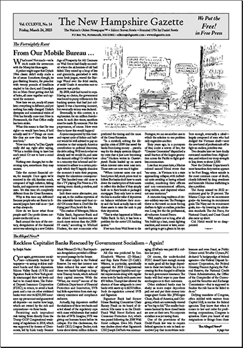
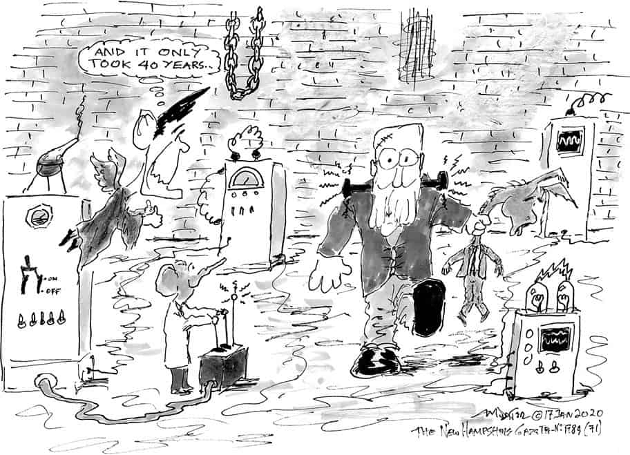

{{ a.title }}
{{ a.description }}
{{ a.p }}
Hello,
This is a reproduction of the website for The New Hampshire Gazette.
It is intended as an exercise for my university in recreating a website from scratch.
The content and images are not my own, and are used for educational purposes only, they are the
property of
their respective owners.
The original website can be found at
nhgazette.com.
I Understand
The Nation’s Oldest Newspaper™ • Editor: Steven Fowle • Founded 1756 by Daniel Fowle
Published 26 times a year on alternating Fridays.
Distributed for free by people just like you.
Help us cover the first district, the second and beyond.
{{ a.p }}
–=≈=–
March 24, 2023 — To download this issue of our paper, just click on the image at right.
The New Hampshire Gazette’s resident starving artist. Over 20 years of political satire, some whimsical and some occasionally irreverent.
Visit the Gallery Portsmouth, arguably the first town in this country not founded by religious extremists, is bounded on the north and east by the Piscataqua River, the second, third, or fourth fastest-flowing navigable river in the country… read more.